Roxi
Osa polar · CapitánLíder de la tripulación y encargada de guiar las grandes misiones.
Entre notas e historias: una ruta hacia el inglés auténtico. Explora un universo de canciones, cuentos, juegos, vocabulario y experiencias interactivas diseñadas para aprender inglés de una manera dinámica y significativa.

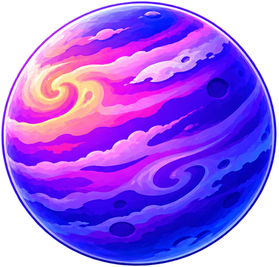


Ellos acompañarán cada aventura dentro de TaSeVerse. Cada integrante tiene una personalidad y una misión diferente dentro de este universo.
Líder de la tripulación y encargada de guiar las grandes misiones.
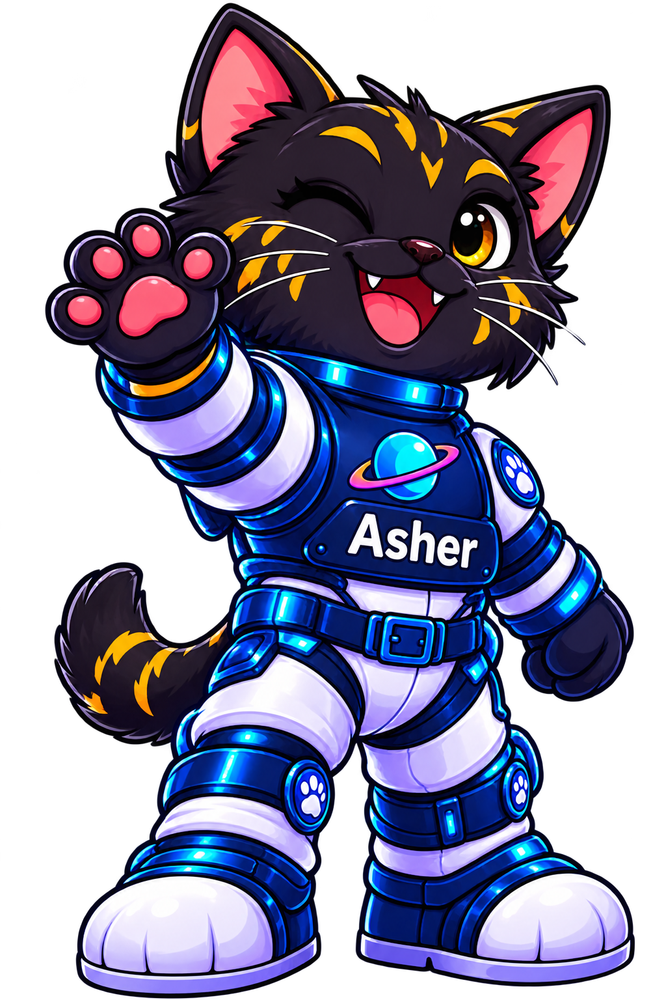
Observador, curioso y siempre preparado para descubrir nuevos caminos.

Su energía y valentía acompañan cada desafío de la tripulación.

Ingenioso y estratégico, encuentra soluciones cuando aparece un nuevo reto.

Aventurero y decidido, nunca deja atrás una misión importante.
La tripulación también cuenta con amigos y especialistas que aparecen durante las diferentes aventuras.
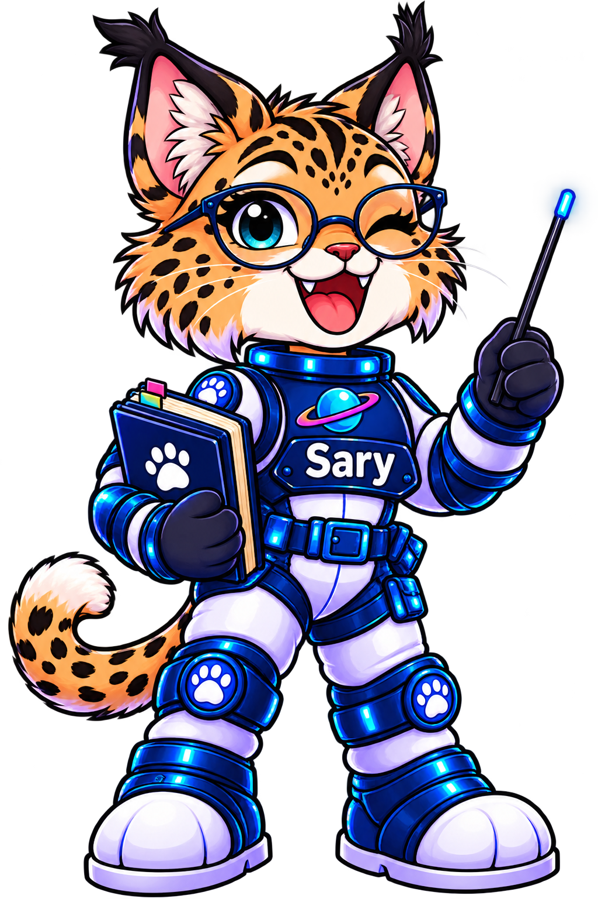
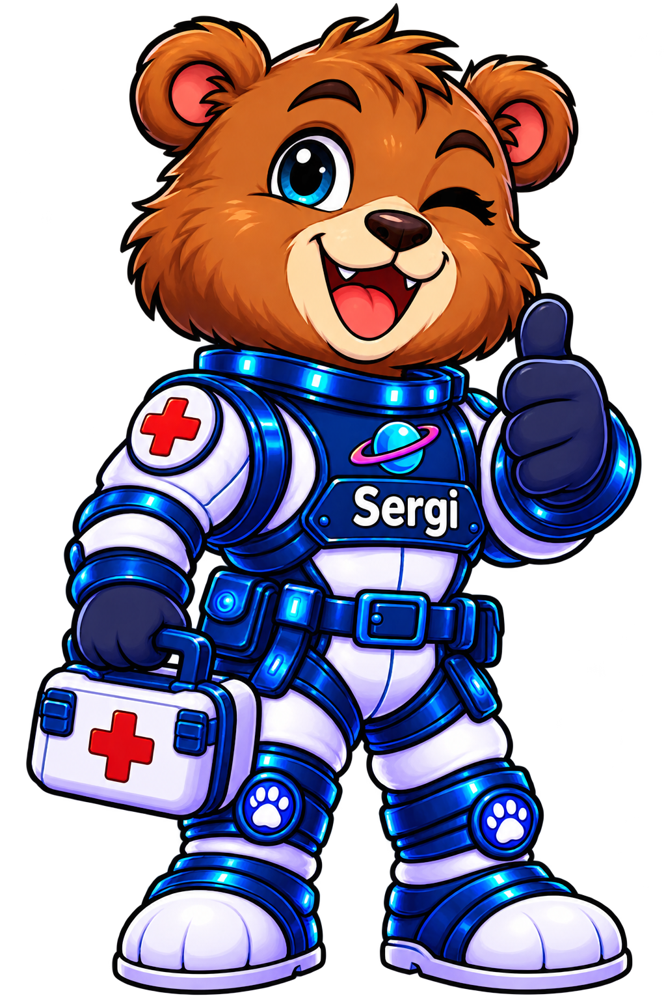
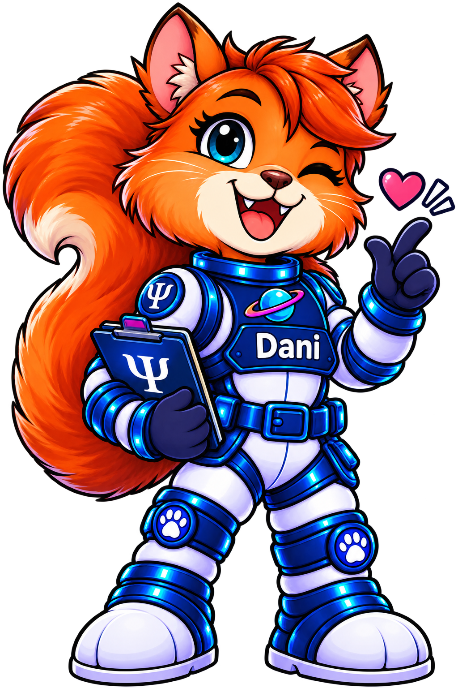
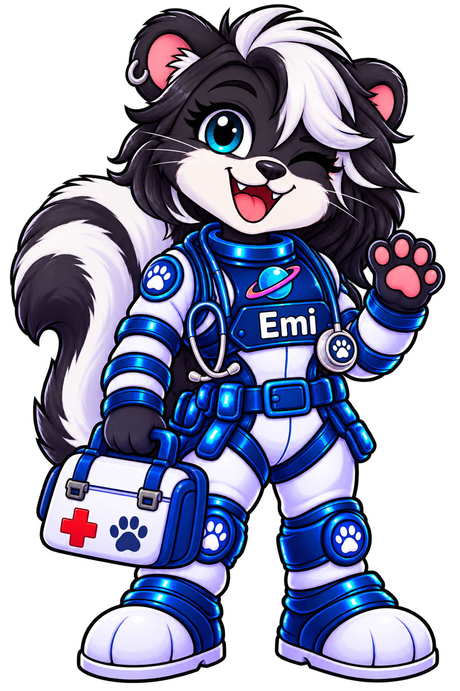
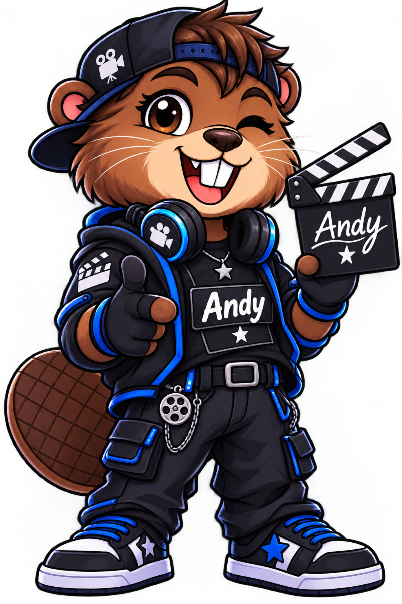
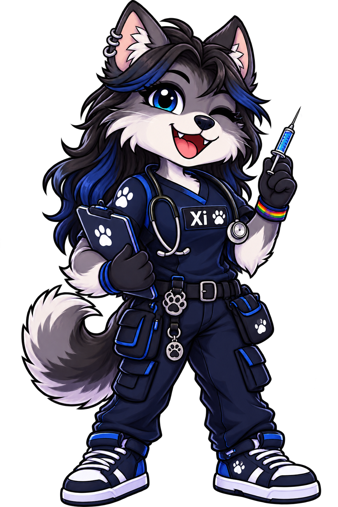
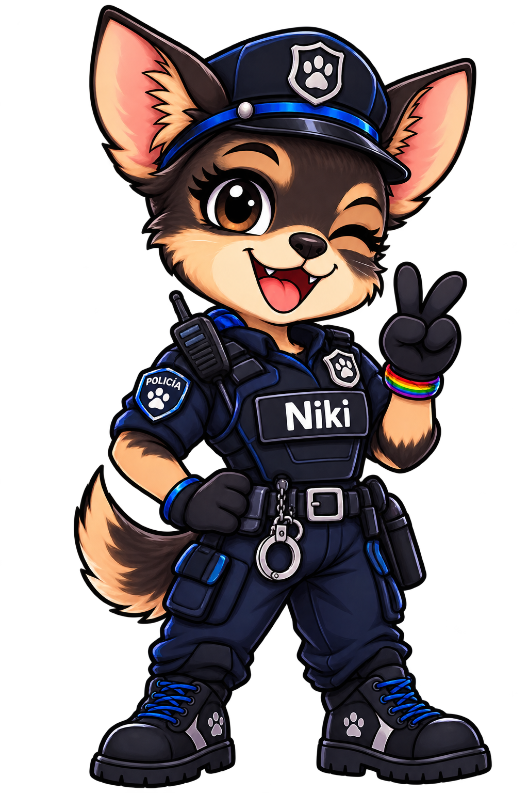
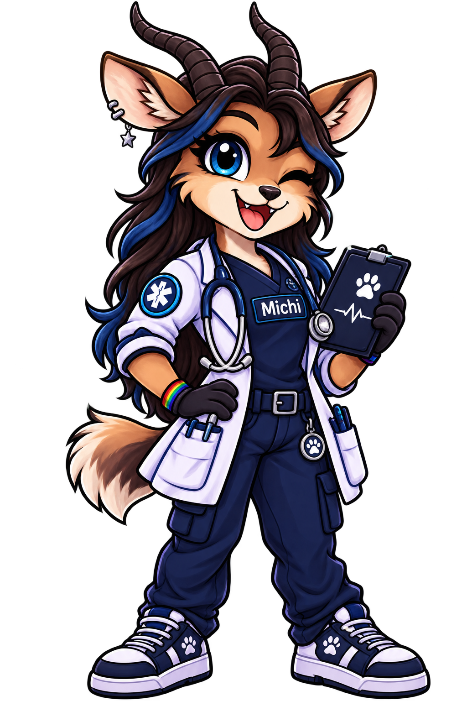
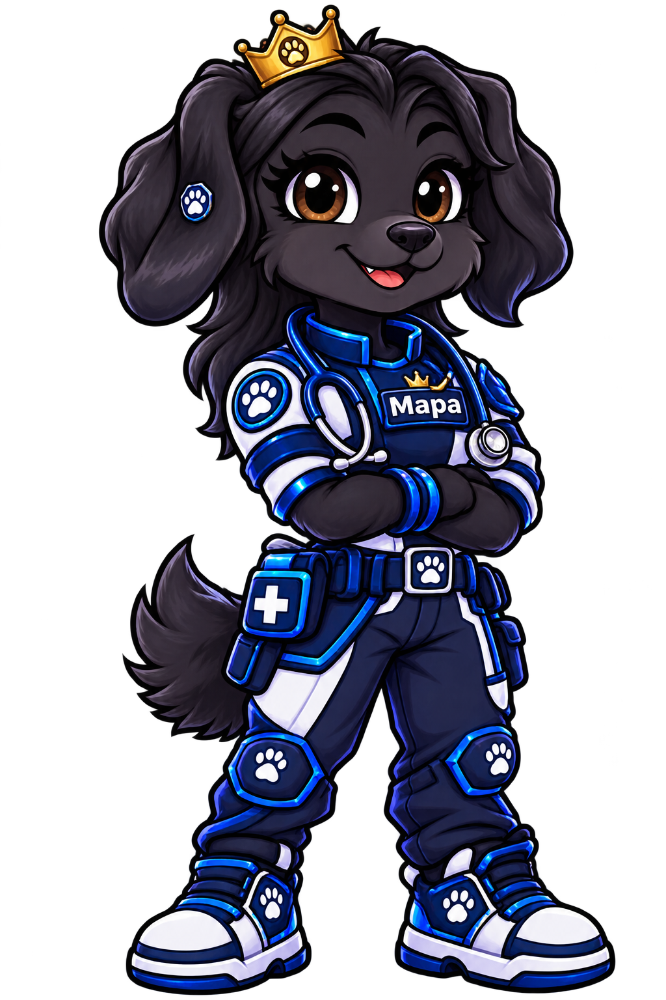
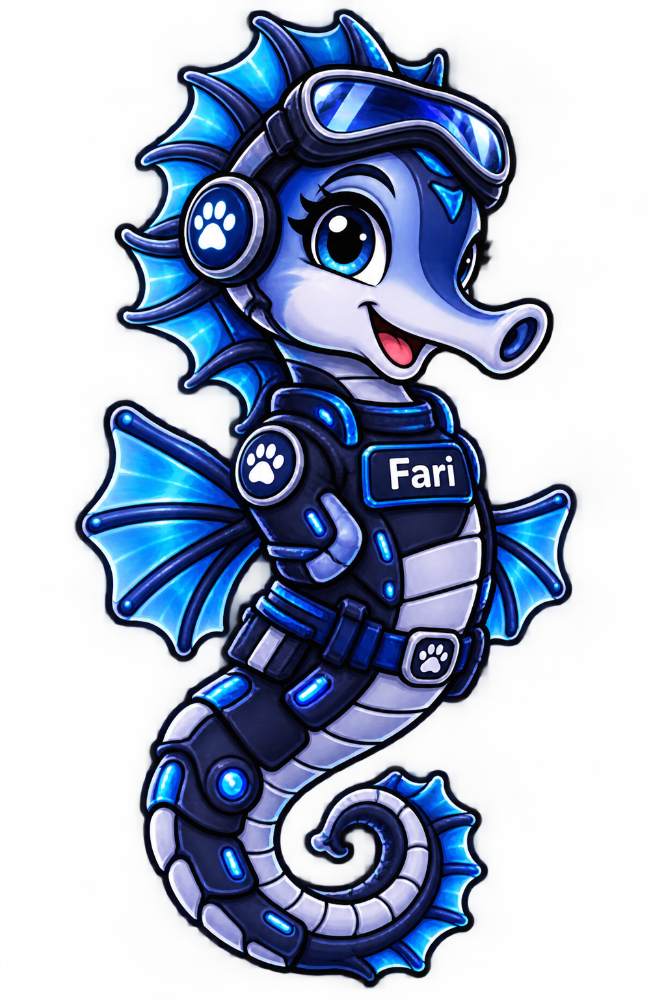
El universo está dividido en diferentes estaciones. Cada una permite desarrollar habilidades diferentes mientras avanzas en tu recorrido por el inglés.
Resuelve desafíos, descubre palabras y supera diferentes misiones interactivas.
ExplorarAprende inglés a través de canciones y actividades relacionadas con la comprensión auditiva.
ExplorarViaja por diferentes historias mientras fortaleces vocabulario, comprensión y lectura.
ExplorarPractica estructuras del inglés mediante ejercicios interactivos y pequeños desafíos.
ExplorarPon a prueba tus conocimientos de inglés mediante diferentes desafíos interactivos.
Encuentra las palabras escondidas dentro de la galaxia.
Completa las palabras que han perdido algunas de sus letras.
Relaciona cada palabra en inglés con la imagen correspondiente.
Ordena las palabras y construye correctamente cada oración.
Responde las preguntas y demuestra cuánto sabes de inglés.
Encuentra las parejas correctas y ejercita tu memoria.
Descubre la palabra correcta organizando las letras.
Supera una combinación de retos de vocabulario y gramática.
Escucha atentamente y selecciona la respuesta correcta.
Completa el desafío final y demuestra todo lo que has aprendido.
Explora canciones originales, descubre nuevas palabras y aprende inglés al ritmo de TaSeVerse.
El videoclip de esta canción estará disponible próximamente.
TASeVERSE MUSIC STATIONUna primera aventura musical para comenzar el recorrido por TaSeVerse.
Lee, escucha y descubre nuevas aventuras mientras fortaleces tu comprensión del inglés.
Responde cada pregunta y avanza por el desafío gramatical de TaSeVerse.
Explora palabras en inglés y descubre su significado.
Cada nivel representa una etapa diferente en el recorrido de aprendizaje del inglés.
Primeras palabras, expresiones cotidianas y estructuras básicas.
Comprende situaciones frecuentes y amplía progresivamente su vocabulario.
Participa en conversaciones sencillas y comprende textos de mayor extensión.
Desarrolla mayor fluidez y comprende contenidos más complejos.
Utiliza el idioma con mayor precisión, autonomía y confianza.